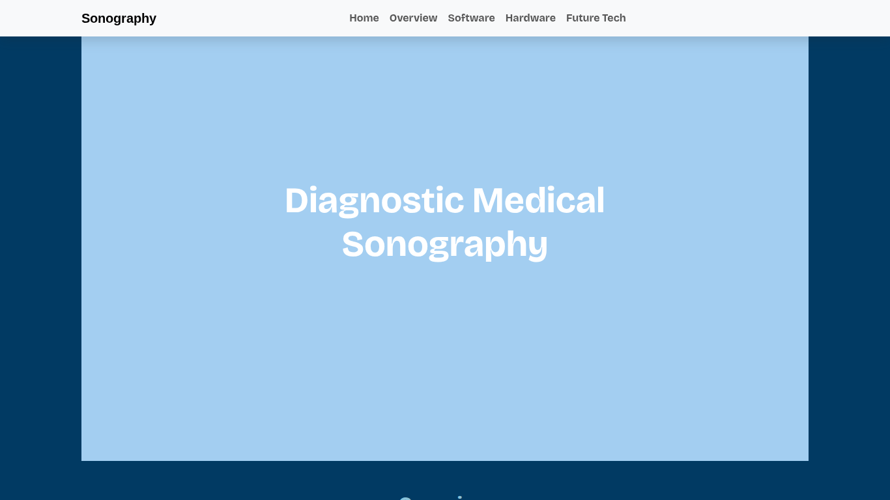

Our prompt was to explore a topic we are intrested in and create a website that shows how technology is used in that field. For my project, I choose to focus on Diagnostic Medical Sonography because it is a career that I am intrested in pursuing in the future. Throughout the year, I researched current technology used in sonography, leared new coding skills (A-frame), and explored future technolgies that could improve in the field.
For my project, I created a website about the future of Diagnostic Medical Sonography. In my website, I included information about the software and hardware used by sonographers today, along with future technology ideas that I came up with. Some of these ideas included 3D hologram imaging, gesture controls, and technologys that could identify organs and body parts while scanning. I also used A-frame to create an interactive 3D model that represented the 3D hollogram.
One of the biggest takeaways from this project was that coding requires a lot of patience. There were so many times when I thought something would take 5 minutes, and it ended up taking much longer because of one small mistake could throw off the entire website. Learning A-frame on my own was also very challenging at first because it felt overwhelming, but by expereminting with diffrent code and making changes, I started to understand it. Im proud of how muuch my website has improved from the wireframe to the final product. Overall, this project has taught me a lot about sonography, coding, and the importance of probem solving and time managment.
Link to Repo